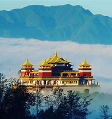
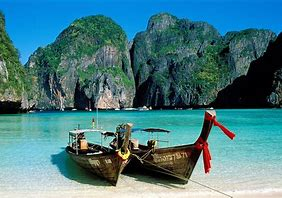

Let us take you to the best destinations in the World!
We have curated an unique selection of World destinations to enrich your life, through locations and experiencies tailored for travellers like you, that enjoy geography, culture as well as outdoors activities. We are delighted that you are our guest!

Australia
Australia Zodiacs take you up the spectacular King George River, where you’ll feel dwarfed by the towering
red rock canyon walls, then cooled by the mist of King George Falls. View an outdoor Aboriginal art gallery,
portraying images of the Wandjina spirits. Explore the Ord River, one of the most stunning river systems in
Australia. Visit Montgomery Reef,
where the tide drops so rapidly that waters trapped atop the reef create a raging torrent as they escape.
| Package Name | Duration | Price p/p CAD |
|---|---|---|
| Magic Australia | 3d + 2n | 660 |
| Great SeightSeeing | 4d +3n | 1,100 |
| Coral Reef | 5d +4n | 1,320 |
| Kangaroo Land | 6d + 5n | 1,320 |
| Sydney | 7d + 6n | 1,540 |

Indonesia
Whoever coined the phrase 'tropical paradise' must have had Bali, Indonesia in mind.
Enjoy welcome ceremonies at secluded villages & dive in to explore the vibrant undersea.
| Package Name | Duration | Price p/p CAD |
|---|---|---|
| Nasa Dua | 3d + 2n | 1,600 |
| Temples Tour | 4d +3n | 1,850 |
| Nusa Penida | 5d +4n | 2,100 |
| Ubud | 6d + 5n | 2,250 |
| Lombok | 7d + 6n | 2,650 |
Canada
The majestic Canadian Rockies span nearly 69,500 square miles across two provinces. Along this great expanse
are quiet alpine towns and breathtaking scenery. When combined with private, first-class accommodation
aboard VIA Rail's Canadian, it makes for the perfect romantic getaway.
Once in Jasper, you will have time to explore the beautiful town before taking a day excursion to the
Columbia Icefield enroute to Lake Louise. Amidst scenery of majestic cascading mountains, you will spend the
night at Lake Louise before continuing to your next destination, Banff, home to hot springs and the
spectacular Banff National Park.
With your days of sightseeing, you will witness sights like the Surprise Corner, Tunnel Mountain Drive, and
a unique gondola ride to the top of the Sulphur Mountains. Your exciting rail journey ends after your stay
in Banff as you transfer to Calgary to make your way home. Well-planned sightseeing and ample time at your
leisure complete this itinerary to create a truly memorable vacation.
| Package Name | Duration | Price p/p CAD |
|---|---|---|
| Mountain Escape | 3d + 2n | 660 |
| Relax in the Rockies | 4d +3n | 1,100 |
| Canadian Adventures | 5d +4n | 1,320 |
| Major Lakes | 6d + 5n | 1,320 |
| Rockies De Luxe | 7d + 6n | 1,540 |

Caribbean
The Caribbean is a joyous mosaic of islands beckoning paradise-hunters, an explosion of color, fringed by beaches and soaked in rum. It’s a lively and intoxicating profusion of people and places spread over 7000 islands (fewer than 10% are inhabited). But, for all they share, there’s also much that makes them different.
| Package Name | Duration | Price p/p CAD |
|---|---|---|
| Caribbean Pearl | 3d + 2n | 1,000 |
| Discovery | 4d +3n | 1,100 |
| Virgin Islands | 5d +4n | 1,420 |
| Grenadines | 6d + 5n | 1,720 |
| Aruba | 7d + 6n | 1,940 |
UAE Dubai
Dubai is famous for its glittering skylines but look beyond and you’ll be rewarded with a stirring alchemy of heritage and culture, unlike anywhere else in the world. The city’s past dates back to the days of the Iron Age and, more recently, the nomadic Bedouins who spent their lives traversing the sands. There’s no better way to experience Dubai culture than by embarking on a desert adventure yourself. The Al Marmoom Bedouin Experience allows you to step back in time and follow in the footsteps of Dubai’s earliest inhabitants. You’ll also come across Arabian gazelle, desert foxes and wild camels roaming the sands as they have done for millennia.
| Package Name | Duration | Price p/p CAD |
|---|---|---|
| Burj Al-Arab | 3d + 2n | 2,785 |
| Jumeirah Beach | 4d +3n | 3,714 |
| High-rises | 5d +4n | 4,642 |
| Dessert Experience | 6d + 5n | 5,571 |
| Rockies De Luxe | 7d + 6n | 6,500 |

Greece
Greece is synonymous for far too many with ‘sun, islands, sea’. Don’t ignore the sun-kissed archipelagos and 15,000km of coast but discover its panoply of other highlights. Glorious mountains mix stark peaks with lush alpine meadows and woods – plus dazzling snow fields in winter. There are rivers and dramatic gorges, plus quiet hiking trails as easy or difficult as you wish. Everywhere you'll find richly diverse flora and fauna. Thousands of years of colourful history place a host of legendary gods and humans amid one of the world’s finest concentrations of stupendous archaeological memories. Enjoy the sun – but explore.
| Package Name | Duration | Price p/p CAD |
|---|---|---|
| Salonic Islands | 3d + 2n | 1,800 |
| Aegean Sea | 4d +3n | 2,400 |
| Ionian Sea | 5d +4n | 3,000 |
| Crete | 6d + 5n | 3,600 |
| Zakhyntos | 7d + 6n | 4,200 |
Iceland
Iceland is often called the Land of Ice and Fire, a land where volcanoes and geothermal heat have made their mark on the landscape, along with the many glaciers and glacier lagoons, a land of pristine and unspoiled nature. Iceland, the lonely island in the middle of the North Atlantic, has become a popular spot for Hollywood blockbuster films.
| Package Name | Duration | Price p/p CAD |
|---|---|---|
| Blue Lagoon | 3d + 2n | 2,200 |
| Reykjavik | 4d +3n | 4,400 |
| Reykjanes | 5d +4n | 5,500 |
| Husafell Region | 6d + 5n | 6,600 |
| South Iceland | 7d + 6n | 7,700 |

India
As beautiful as it is bamboozling, India is an endlessly fascinating country that challenges and surprises even the most seasoned traveller. Stretched between the golden beaches of the Indian Ocean and the snow-capped peaks of the Himalayas, India dazzles with an incredible tapestry of natural and man-made wonders.
| Package Name | Duration | Price p/p CAD |
|---|---|---|
| Jaipur | 3d + 2n | 1,500 |
| Goa | 4d +3n | 1,800 |
| Delhi/Mumbai | 5d +4n | 2,100 |
| Taj Mahal | 6d + 5n | 2,250 |
| Qutb Minar | 7d + 6n | 2,650 |

Sychelles
Cruise The Turquoise Waters of a Far-Flung Paradise in The Seychelles. Get Ready for an Unforgettable Vacation. One hundred fifteen coral and granite islands rising from the Indian Ocean make up the Seychelles, a pristine hideaway of white-sand beaches, majestic granite cliffs, palm-fringed jungles, and astonishing azure waters. Trading in exclusivity, luxury, and undeveloped natural environments, the Seychelles is an ideal beach escape for those who can afford all that gorgeous privacy.
| Package Name | Duration | Price p/p CAD |
|---|---|---|
| Anse Lazio | 3d + 2n | 4,500 |
| Moyenne Island | 4d +3n | 6,000 |
| Mahe Island | 5d +4n | 7,500 |
| Parks & Gardens | 6d + 5n | 9,000 |
| St Anne | 7d + 6n | 10,500 |
Italy
Italy comprises some of the most varied and scenic landscapes on Earth and is often described as a country shaped like a boot. At its broad top stand the Alps, which are among the world’s most rugged mountains. Italy’s highest points are along Monte Rosa, which peaks in Switzerland, and along Mont Blanc, which peaks in France.
| Package Name | Duration | Price p/p CAD |
|---|---|---|
| Tuscany | 3d + 2n | 1,500 |
| Umbria | 4d +3n | 2,100 |
| Puglia | 5d +4n | 2,500 |
| Cinque Terre | 6d + 5n | 3,000 |
| Capri/Amalfi Coast | 7d + 6n | 3,500 |
Japan
A destination praised and adored by countless travellers; Japan continues to engage and delight visitors with unmatched scenery, traditional experiences and delicious cuisines. For those wanting to experience the joys and wonders then keep reading. Here are the top 5 reasons why Japan should be on your bucket list.
| Package Name | Duration | Price p/p CAD |
|---|---|---|
| Tokyo | 3d + 2n | 2,400 |
| Kyoto | 4d +3n | 3,200 |
| Hiroshima | 5d +4n | 4,000 |
| Okinawa | 6d + 5n | 4,800 |
| Osaka | 7d + 6n | 5,600 |

Jordan
Jordan is one of the most interesting places to visit in the Middle East. A compact country with a rich history which offers plenty of things to see and do, and still considered by many as a safe haven in a somewhat problematic region. Petra is a symbol of the country and the place everyone wants to visit.
| Package Name | Duration | Price p/p CAD |
|---|---|---|
| Petra | 3d + 2n | 1,500 |
| The Dead Sea | 4d +3n | 1,800 |
| Jerash | 5d +4n | 2,200 |
| Amman | 6d + 5n | 2,500 |
| Umm Qais | 7d + 6n | 2,800 |

Maldives
The Maldives is a nation of islands in the Indian Ocean, that spans across the equator. The country is comprised of 1192 islands that stretch along a length of 871 kilometers. While the country covers an area of approximately 90,000 square kilometers, only 298 square kilometers of that is dry land. The islands are grouped into a double chain of 26 atolls.
The country’s unique geography mesmerizes the visitor. Reefs that offer bands of color, tiny jewel-like islands rimmed with the whitest of soft sand surrounded by the clearest shallow waters that one can imagine. Only 200 of the islands are inhabited, and a select few on each of the atolls are resorts and some of the islands are used for industry and agriculture.
The beauty of the Maldives is not only above the water. The Maldives is home to about five percent of the planet’s reefs that comes with an explosion of color contributed by soft and hard corals that form them. The reefs are home to a thousand species of fish. Lured by the rich nutrients that flow in with the currents, large pelagic fishes such as manta rays and whale sharks also make the Maldives their home.
| Package Name | Duration | Price p/p CAD |
|---|---|---|
| Petra | 3d + 2n | 1,500 |
| The Dead Sea | 4d +3n | 1,800 |
| Jerash | 5d +4n | 2,200 |
| Amman | 6d + 5n | 2,500 |
| Umm Qais | 7d + 6n | 2,800 |

Nepal
The Nepal Himalaya is the ultimate goal for mountain lovers. Some of the Himalaya’s most iconic and accessible hiking is on offer here, with rugged trails to Everest, the Annapurnas and beyond. Nowhere else can you trek for days in incredible mountain scenery, secure in the knowledge that a hot meal, cosy lodge and warm slice of apple pie await you at the end of the day.
Then there's the adrenaline kick of rafting a roaring Nepali river or bungee jumping into a yawning Himalayan gorge. Canyoning, climbing, kayaking, paragliding and mountain biking all offer a rush against the backdrop of some of the world’s most dramatic landscapes.
Other travellers prefer to see Nepal at a more refined pace, admiring the peaks over a sunset gin and tonic from a Himalayan viewpoint, strolling through the medieval city squares of Kathmandu, Patan and Bhaktapur, and joining Tibetan Buddhist pilgrims on a spiritual stroll around centuries-old stupas and monasteries. Even after the 2015 earthquake, Nepal remains the cultural powerhouse of the Himalaya; the Kathmandu Valley in particular, offers an unrivalled collection of world-class palaces, hidden backstreet shrines and sublime temple art. Nepal is also a great place to learn about everything from Tibetan Buddhism to how to make the best momos (dumplings).
| Package Name | Duration | Price p/p CAD |
|---|---|---|
| World Peace Pagoda | 3d + 2n | 1,600 |
| Swayambhunath Stupa | 4d +3n | 1,850 |
| Maya Devi Temple | 5d +4n | 2,100 |
| Khathmandu’s | 6d + 5n | 2,250 |
| Bhaktapur | 7d + 6n | 2,650 |
Polynesians
Situated in the easterly region on Oceania, Polynesia is a group of over 1,000 islands spread across the central and southern Pacific Ocean. The Polynesian Triangle formed by connecting three major dots of the region including Hawaii, New Zealand and Easter Island is home to plenty of other major islands such as Samoa, Tonga, the Cook Islands, Wallis, Kiribati, Tuvalu, French Polynesia and many more, exhibiting Polynesian culture, beliefs, and practices. Explore the splendours of Mother Nature in the region with plenty of other expeditions here.
| Package Name | Duration | Price p/p CAD |
|---|---|---|
| World Peace Pagoda | 3d + 2n | 660 |
| Swayambhunath Stupa | 4d +3n | 1,100 |
| Maya Devi Temple | 5d +4n | 1,320 |
| Khathmandu’s | 6d + 5n | 1,320 |
| Bhaktapur | 7d + 6n | 1,540 |

Portugal
Discover Portugal. Hang on tight as tram 28 rattles you up to Lisbon's Castelo de Sao Jorge. Step back in history as you enter Braganca's astonishingly well-preserved 13th-century citadel. Savour the world's best port amid the terraced vineyards of tiny Pinhao. Feel the rush as you scramble to your feet on a surfboard at Baleal beach.
| Package Name | Duration | Price p/p CAD |
|---|---|---|
| Lisbon | 3d + 2n | 660 |
| Porto | 4d +3n | 1,100 |
| Sintra | 5d +4n | 1,320 |
| Coimbra | 6d + 5n | 1,320 |
| Faro/Funchal | 7d + 6n | 1,540 |
South America
Angel Falls is a waterfall in Venezuela. It is the world's tallest uninterrupted waterfall, with a height of 979 metres and a plunge of 807 m. The waterfall drops over the edge of the Auyán-tepui mountain in the Canaima National Park, a UNESCO World Heritage site in the Gran Sabana region of Bolívar State. The height figure, 979 m, mostly consists of the main plunge but also includes about 400 metres of sloped cascade and rapids below the drop and a 30-metre-high plunge downstream of the talus rapids.
| Package Name | Duration | Price p/p CAD |
|---|---|---|
| Angell Falls | 3d + 2n | 1,600 |
| Canaima | 4d +3n | 1,850 |
| El Sapo Waterfalls | 5d +4n | 2,100 |
| Paseo Orinoco | 6d + 5n | 2,250 |
| Puerto Ordaz | 7d + 6n | 2,650 |

Thailand
There’s something truly special about Southern Thailand and is best experienced on an adventure. Stop along the way to Phuket and visit the Southern Islands (Koh Samui, Phi Phi Islands, Ko Tao) for a journey you'll always remember.
| Package Name | Duration | Price p/p CAD |
|---|---|---|
| Bangkok | 3d + 2n | 660 |
| Chiang Mai | 4d +3n | 1,100 |
| Phuket | 5d +4n | 1,320 |
| Trang | 6d + 5n | 1,320 |
| De Luxe Trang | 7d + 6n | 1,540 |